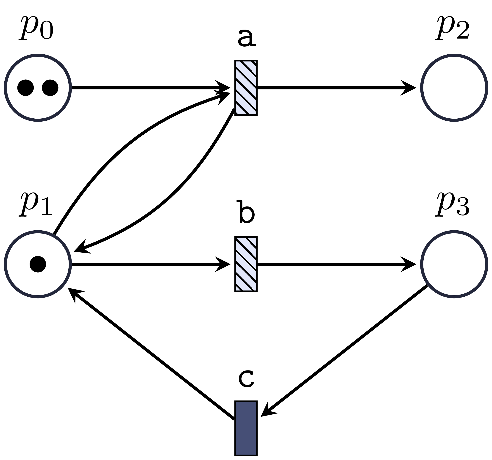
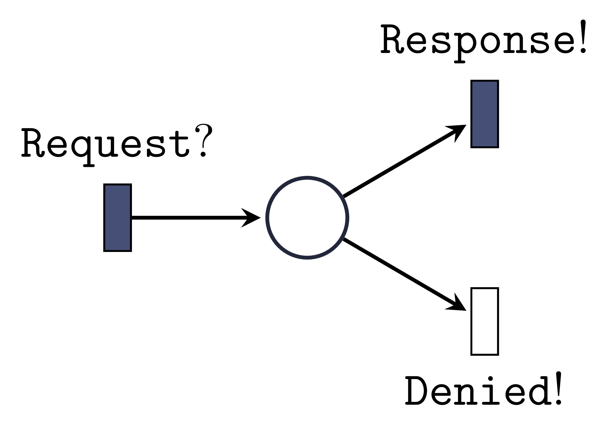
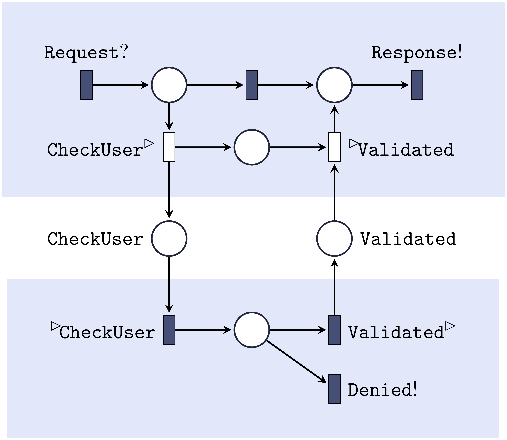
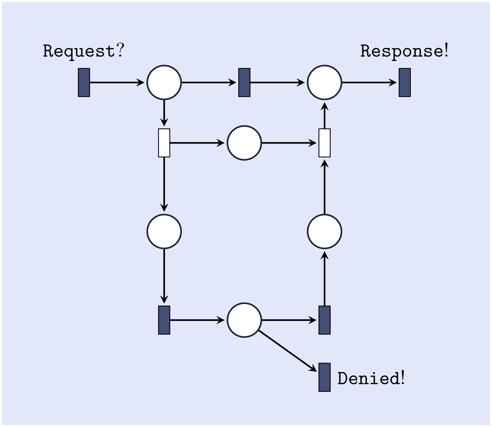

name: inverse layout: true class: center, middle, inverse --- # Modal and Component-Based System Specifications ##Mikael Harkjær Møller ### Department of Computer Science, Aalborg University [Monday, 16th of December] ??? - Thank you for intro. - Welcome, hourned that so many of you are here. - 4 parts, motivation, Modal, Component, joined --- # *Modal* and Component-Based *System Specifications* ##Mikael Harkjær Møller ### Department of Computer Science, Aalborg University [Monday, 16th of December] --- # Modal and *Component-Based System Specifications* ##Mikael Harkjær Møller ### Department of Computer Science, Aalborg University [Monday, 16th of December] --- # *Modal and Component-Based System Specifications* ##Mikael Harkjær Møller ### Department of Computer Science, Aalborg University [Monday, 16th of December] --- ## What is the problem? --- layout: false .left-column[ ### Software is everywhere ] .right-column[ Software is no longer just PC programs, and it has not been that for years. - It is controlling indoor climate, - helping you navigate in traffic, - securing and letting you access your home and - washing your clothes! .illustration[  ] ] ??? - Many outside IT still consider software as PC programs - But its not, some examples - Climate, GPS, alarm/lock, washing --- .left-column[ ### Software is everywhere ### Also in critical systems ] .right-column[ Software is even something we need to trust with our lives, as it is also being used in safety-critical systems. - Software is also used in space programs, - to steer and brake cars, trains, flights, - and to assist air traffic controllers. .illustration[  ] ] ??? Also in safety-critical systems. That help safe lives, if they work They can fail. --- template: inverse ## What can we do about it? ??? --- .left-column[ ### Formal Verification ] .right-column[ Formal Verification is a class of techniques that can be used to prove the correctness of a system. It uses... - a formal specification of the system analysed, - a set of formal requirements for the system and - a mathematically-based method that can analyse the system and requirement. .illustration[  ] ] ??? Use a Formal Methods to make software more reliable. 1. Have a formal system spec 2. Have a formal goal/requirement 3. A formal method to analyse/prove correctness --- name: model-check .left-column[ ### Formal Verification ### Model Checking ] .right-column[ A formal verification method, that systematically will explore all possible configurations of a system model. ].right-column-cont[ .model[ System ] .spec[ Requirements ] ] ??? Real Workd System and requirements. --- name:model-check2 template:model-check .right-column-cont[ .implies[ $\downarrow$ ] .implies[ $\downarrow$ ] .model[ Model ] .spec[ Logic Formula ] ] ??? Formulated formal in a modelling framework --- name:model-check3 template:model-check2 .right-column-cont[ .implies[ $\downarrow$ ] .implies[ $\downarrow$ ] .model-checker[ Model Checker ] ] ??? Model checker is the algorithm that systematically checks all configurations of the system model, see if requirments are met. --- name:model-check4 template:model-check3 .right-column-cont[ .model-checker-implies[ $\downarrow$ ] .answer[ Yes or No ] ] ??? Based on exploration it answers yes or no. --- name:model-check5 template:model-check .right-column-cont[ .implies[ $\downarrow$ ] .implies[ $\downarrow$ ] .model[ <span style="color:#BF79DB;">**Model**</span> ] .spec[ Logic Formula ] ] .right-column-cont[ .implies[ $\downarrow$ ] .implies[ $\downarrow$ ] .model-checker[ Model Checker ] ] .right-column-cont[ .model-checker-implies[ $\downarrow$ ] .answer[ Yes or No ] ] ??? My contribution has been on improving the modelling formalisms. --- template: inverse ## Why doesn't that solve our problems? --- .left-column[ ### Abstraction ] .right-column[ Even simple systems can have a complex logic inside. - Model Checking on a abstracted model. - Does not prove anything for the real system. - Model must express the desired details of the system. .illustration[  .abstraction-relation[ ## $\leftrightarrow$ ] ] ] ??? First of all the examples are too complex. Complexity is a major problem in model checking. Even though programs are very precise they are too complex. Thats why we Build model of system Remark MC does not guarantee anything Model closer to real system. OK to see if it stand by it self, but not used in wind-tunnel earth quake (environment) --- .left-column[ ### Abstraction ### Applicability ] .right-column[ Our methods must fit system development processes. - Developing a system model can be time consuming. - System specifications evolve throughout the design process. - A design process can lead to a series of products. .illustration[  ] ] ??? Besides the technical issues of model checking, usability is another issue. Must fit with development process. Model should be refactorable, when design changes. Support product lines. --- template: inverse ## Didn't anyone work on this problem before? --- name:mts layout:true .left-column[ ### Modal Transition Systems ] .right-column[ Modal Transition Systems *(MTS)* [LT88], a modelling framework that aimed at **model-based development**. ] --- template:mts .right-column-cont[ .mts-figure[  ] ] ??? Kim G. Larsen, Bent Thomsen '88 System spec, state transitions. - Loose specification, - Some actions are required some are optinal. - May -> dashed -> optional - Must -> solid -> required Car wash. --- template:mts .right-column-cont[ .mts-figure[  ] ] ??? System can be refined, go closer to actual system. Known as modal refinement! E.g Decide at we must have gold wash. --- template:mts .right-column-cont[ .mts-figure[  ] ] ??? Choose we do not want silver wash. Implementation LTS --- name:mts-prob layout: false .left-column[ ### Modal Transition Systems ] .right-column[ However, they allow undesired implementations. .figure[ .car-wash-ex[  ] ] ] ??? There are problems with MTSs they allow to many refinements. Not expressive/general enough. Car wash programs. --- template:mts-prob .right-column[ .figure[ .car-wash-imp[    ] ] ] ??? 1. We don't need to implement any of the may transitions. Stupid 2. Implement Both, stupid, don't know what you get. 3. Alternating, no persistency. every second cosutomer get gold/silver. --- name:dmts layout: false .left-column[ ### Modal Transition Systems ### Disjunctive MTS ] .right-column[ **Disjunctive Modal Transition System** [LX90]. .figure[ .car-wash-ex[  ] ] ] ??? Several extensions of MTS have been introduced to address these problems Liu Xinxin Kim 1990 Disjunctive. At least one of these. --- template:dmts .right-column[ .figure[ .car-wash-imp[    ] ] ] ??? Eliminates the first. But not 2 and 3 --- name:ots-ex layout: false .left-column[ ### Modal Transition Systems ### Disjunctive MTS ### Transition System with Obligations ] .right-column[ **Transition Systems with Obligations** (OTS) [BK11]. .figure[ .ots-ex[  ] ] ] ??? Another one OTS , where modalities are expressed by positive *logic obligations*. Only one transition relation. Modalities describe by outgoing transitions formulas on states. Only positive boolean formulas We still draw must arrows as solid lines --- template:ots-ex .right-column[ .figure[ .car-wash-imp[    ] ] ] ??? # POSITIVE BOOLEAN Unfortunately this did not help us. As expressive as DMTS --- name: last-page template: inverse ## So what did you do to fix this problem? --- name:bmts-ex layout: false .left-column[ ### Modal Transition Systems ### Disjunctive MTS ### Transition System with Obligations ### Boolean MTS ] .right-column[ **Boolean Modal Transition Systems** based on OTS. With arbitrary satisfiable boolean formulas. .figure[ .ots-ex[  ] ] ] ??? Inspired by OTS we define Boolean MTS. Arbitrary formulas allows us to express exclusiveness (oplus is either or) --- template:bmts-ex .right-column-cont[ .figure[ .car-wash-imp[    ] ] ] ??? With this spec we do not allow impl 2. But We still have no way to express percistency. --- name:pmts-ex layout: false .left-column[ ### Modal Transition Systems ### Disjunctive MTS ### Transition System with Obligations ### Boolean MTS ### Parametric MTS ] .right-column[ **Parametric Modal Transition Systems** (PMTS), extend BTMS with a set of *parameters*. .figure[ .ots-ex[  ] ] ] ??? Add global set of parameters. Paremeters can be seen as a switch you can turn on or off. --- template:pmts-ex .right-column[ .figure[ .car-wash-imp[    ] ] ] --- .left-column[ ### Modal Transition Systems ### Disjunctive MTS ### Transition System with Obligations ### Boolean MTS ### Parametric MTS ] .right-column[ .definition[ # Definition A *parametric* MTS (PMTS) over an action alphabet $\Sigma$ is a tuple $(S,T,P,\Phi)$ where - $S$ is a set of **states** - $T \subseteq S \times \Sigma \times S$ is a **transition relation**, - $P$ is a finite set of parameters, and - $\Phi : S \to \mathcal B((\Sigma \times S) \cup P)$ is a satisfiable **obligation function** over the atomic propositions containing outgoing transitions and parameters. ] Note: MTS, DMTS, OTS and BMTS are all sub-clases of PMTS. ] ??? Definition captures all sub-clases. --- name:pmts-ex-good layout: false .left-column[ ### Modal Transition Systems ### Disjunctive MTS ### Transition System with Obligations ### Boolean MTS ### Parametric MTS ### Modal Refinement ] .right-column[ Modal refinement for PMTS, just as for standard MTS. .figure[ .ots-ex[  ] ] ] ??? Modal refinement coincide for all sub-clases. Everything required in spec, is required in refinement Everything allowed in refinemt, must be allowd by spec. --- template:pmts-ex-good .right-column[ These are the valid implementations: .figure[ .car-wash-imp-good[   ] ] ] ??? MR captures modal refinement on subclasses. --- name:pmts-result layout: false .left-column[ ### Modal Transition Systems ### Disjunctive MTS ### Transition System with Obligations ### Boolean MTS ### Parametric MTS ### Modal Refinement ] .right-column[ .definition[ # Problem Given two PMTS specifications $S$ and $T$. Does it hold that $$ S \leq T .$$ ] .result[ # Result The complexity of the above problem ranges from P-complete in the simplest case to $\Pi^p\_4$ in the most general setting. ] ] ??? Investigate complexity. Complexity of modal refinement from P-complete to Pi-p-4 Results suggest the existence of effective refinement checking algorithms or identify the need for approximation algorithms for such checks. --- name:logic-good layout: false .left-column[ ### Modal Transition Systems ### Disjunctive MTS ### Transition System with Obligations ### Boolean MTS ### Parametric MTS ### Modal Refinement ### Logic for PMTS ] .right-column[ How to determine the value of the parameters for a given requirement. .illustration-mid[  ] **Must** be able to perform a car wash: $$ \langle \mathtt{wash} \rangle \mathbf{tt} $$ <!-- Holds for $\{\mathtt{gold}\}$ and $\emptyset$. --> **Must** be able to wax car after **a** car wash: $$ \[\mathtt{wash}\] \langle \mathtt{wax} \rangle \mathbf{tt} $$ <!-- Holds for $\{ \mathtt{gold} \}$ --> ] ??? We define a new logic for PMTS to do this based on Hennesy Milner Logic with Recursion. 1. Holds for any subset of par 2. holds if gold is true. --- name: last class: inverse, sum .modal[ # *Modal* ## system specifications - Boolean MTS - Parametric MTS - Modal refinement - Logic for PMTS ] ??? Summerize - Boolean MTS - PMTS - Modal Refinement - Complexity of MR - Logic for PMTS. --- template:inverse ## But how much does a car wash cost? ??? Interesting question :) We are designing car wash. Can be both for the investment, and the running of it. --- layout:false .left-column[ ### Time and Cost ] .right-column[ Time and cost quantities are needed to reason about it. - Stepwise refineable **time duration intervals** on transitions. - A price scheme, with **hardware requirements**, **hardware cost** and **running expenses** of the different transitions, and The goal is then to decide if there is an implementation within a given budget. ] ??? Hardware req: tells us what resources we need to run such system HW Price: what it cost running cost: how expensive each trasition is pr time unit Duration interval: how long time a transition takes. --- name:bmts-cost layout:true .left-column[ ### Time and Cost ### Durations ] --- template:bmts-cost .right-column[ BMTS specification: .illustration-mid[  ] ] ??? Recall car wash program spec. --- name:bmts-cost2 template:bmts-cost .right-column[ BMTS specification with durations: .illustration-mid[  ] - $[1,2]$ is an **uncontrollable** interval - $\langle 1,4 \rangle$ is a **controllable** interval, that can be refined. ] ??? Add Two types of intervals. --- template:bmts-cost .right-column[ BMTS specification with durations: .illustration-mid[  ] - $[1,2]$ is an **uncontrollable** interval - $\langle 1,4 \rangle$ is a **controllable** interval, that can be refined. .illustration-mid[  ] ] ??? $\langle 1,4 \rangle \quad \geq \quad \langle 2,4 \rangle \quad \geq \quad [2,4]$. Uncontrollable like must, cannot be refined --- name:bmts-cost2 layout:true .left-column[ ### Time and Cost ### Durations ### Price Scheme ] --- template:bmts-cost2 .right-column[ BMTS specification with durations: .illustration-mid[  ] Price Scheme: .illustration-mid[  ] ] ??? Wash dry expensive cost more than waxing. --- layout:false .left-column[ ### Time and Cost ### Durations ### Price Scheme ### Cost ] .right-column[ Price Scheme: .illustration-mid[  ] Implementation cost and running cost: .cost-img[  ] .cost[ Investment Cost $= 100$ Running Cost $= \frac{2 \cdot 10 + 2\cdot 10}{2+2} = 10$ ] .cost-img[  ] .cost[ Investment Cost $= 150$ Running Cost $= \frac{2 \cdot 10 + 4 \cdot 5 + 2\cdot 10}{2+4+2} = 7.5$ ] ] ??? Investment cost is simple to compute Running cost is worst case average Gold cheaper on average --- layout:false .left-column[ ### Time and Cost ### Durations ### Price Scheme ### Cost ### Problem ] .right-column[ .definition[ # Decision Problem Given a BMTS with durations specification $S$, a dual-price scheme, and a budget: - $\mathtt{max\_{investment}}$ - $\mathtt{max\_{running}}$. does there exist an implementation $I \leq S$ such that - investment cost of I $ \leq \mathtt{max\_{investment}}$ and - running cost of I $\leq \mathtt{max\_{running}}$. ] .result[ # Result For a fixed number of hardware and positive obligation functions,his gives us a pseudo polynomial algorithm. ] ] ??? Interesting problem is there a solution we can afford given a budget. Prove that it is a NP-complete problem. Special-case pseudo polynomial algorithm. --- name: last class: inverse, sum .modal[ # *Modal* ## system specifications - Boolean MTS - Parametric MTS - Modal refinement - Logic for PMTS - *Time and cost* ] ??? Summarize? --- name: last-page template: inverse ## How about the components you mentioned? ??? Goes into the 3. part, talked about Motivation, Modal Specifications. Now Component based. --- layout: false .left-column[ ###Component-based Design ] .right-column[ Component-based development is a popular method with many advantages. - Separation of concern. - Reuse-ability is high. - Collaborative implementation - Consists of simpler components. **But**, correct composition of the modules is important. ] ??? Component-based is good, for several reasons. - Also beneficial from a formal verification perspective. Correct Composition is IMPORTANT. Communication between components must be correct. As this is way the composed system will operate. --- name:composition layout: false .left-column[ ### Component-based Design ### Composition ] .right-column[ Two types of composition: synchronous and asynchronous. .center[<img src="images/component-tikz-0.png" alt="Drawing" style="width: 300px"/>] ] ??? Example two very simple components Interface defined by labels - Input labels by ? - output by ! These two communicate over msg --- template:composition .right-column-cont[ Synchronous: <br/> <img src="images/component-tikz-2.png" alt="Drawing" style="width: 160px;margin-right: 36px;margin-left:10px;margin-top: 55px;"/> ] ??? in Sync, agrement when communication only speak when ready to listen. Happens when wife tells you stuff to do the dishes during dinner when you are listening. Msg is now internal --- template:composition .right-column-cont[ Synchronous: Asynchronous: <img src="images/component-tikz-2.png" alt="Drawing" style="width: 160px;margin-right: 36px;margin-left:10px;margin-top: 30px;"/><img src="images/component-tikz-3.png" alt="Drawing" style="width: 400px;"/> ] ??? Async, message is left on a channel for later reception by other component. Channel is a infinite pool of messages; Could also be a FIFO buffer or Lossy Channel (Fits us well) Like when your wife leave a post-it on the desk to tell you to do the dishes. --- template: inverse ## So what can one say about the communication. --- layout:false .left-column[ ### Component-based Design ### Composition ### Communication Properties ] .right-column[ Previously studied communication properties - Specified reception [1983, Brand, Zafiropulo] - Compatibility [2005, Alfaro, Henzinger] - Buffered Compatibility [2010, Hennicker et al.] ] ??? **Specified Reception** All input must be handled in all states **Compatibility** Sync, recv must be ready when sender can send. **Buffered Compatibility** Adapted to async, any message on a channel must eventually be taken. Only considered for finite systems. **Why are infinite good?** --- template: inverse ## So did you go infinite, and how? ??? Yes, we use petri nets --- name:petri layout:true .left-column[ ### Petri Nets ] .right-column[ *Labelled Petri Nets* is a specification formalism, that with a finite representation can express an infinite state system. ] --- template:petri .right-column[ .center[ ] ] ??? - Well known formalism - higher abstraction than lts - Finite directed graph - Places, Transitions, Arcs --- template:petri .right-column[ .center[  ] Trace: .trace[ $m_0$ ] ] ??? Tokens distributed, marking enabling transitions Initial marking. --- template:petri .right-column[ .center[ <img src="images/component-tikz-6.png" alt="Drawing" style="width: 250px;"/> ] Trace: .trace[ $m_0 \xrightarrow{b} m_1$ ] ] ??? --- template:petri .right-column[ .center[ ] Trace: .trace[ $m_0 \xrightarrow{b} m_1 \xrightarrow{c} m_2$ ] ] ??? Note that $m_2 = m_1$. --- template:petri .right-column[ .center[ <img src="images/component-tikz-7.png" alt="Drawing" style="width: 250px;"/> ] Trace: .trace[ $m_0 \xrightarrow{b} m_1 \xrightarrow{c} m_2 \xrightarrow{a} m_3$ ] ] --- name:aiopn layout:true .left-column[ ### Petri Nets ### Asynchronous I/O Petri Nets ] .right-column[ We study general properties of asynchronous communication on *Asynchronous I/O Petri Nets*. ] --- template:aiopn .right-column[ Two primitive components before composition: .center[ <img src="images/component-tikz-8.png" alt="Drawing" style="width: 500px;"/> ] Their underlying state space: .center[ <img src="images/component-tikz-0.png" alt="Drawing" style="width: 300px"/> ] ] ??? We add I/O labels to Petri nets to define componenet interface. Two primitive components, meaning that no communication is going on inside. The sematics of these petri nets is actually lts. --- template:aiopn .right-column[ Two primitive components *after* composition: .center[ <img src="images/component-tikz-9.png" alt="Drawing" style="width: 500px;"/> ] Its underlying state space: .center[ <img src="images/component-tikz-3.png" alt="Drawing" style="width: 500px;margin-top: -20px;"/> ] ] ??? Composition: - channel/place is added, - labels changed to communication labels Related to Open Petri Nets Interleaving semantics (vs. unfolding/branching) other limited support finite state systems. Now start to analyse channels --- layout:false .left-column[ ### Petri Nets ### Asynchronous I/O Petri Nets ### Channel Consuming ] .right-column[ .definition[ #Definition An AIOPN is *Consuming* if there are some messages on a channel $c$, then we can **autonomously** reach a marking where $\xrightarrow{~^\rhd c}$. ] .center[ <img src="images/component-tikz-10.png" alt="Drawing" style="width: 603px;"/> ] ] ??? - Global properties does not rely on application. - Simplest - we what that the other component gets the message at some point - Consuming - possible that it eventually can take it, - Autonomous - Means without input from environment --- .left-column[ ### Petri Nets ### Asynchronous I/O Petri Nets ### Channel Consuming ### Necessarily Consuming ] .right-column[ .definition[ #Definition An AIOPN is *Necessarily Consuming* if there are some messages on a channel $c$, then **on all weakly fair runs** we can autonomously reach a marking where $\xrightarrow{~^\rhd c}$. ] .center[ <img src="images/component-tikz-10.png" alt="Drawing" style="width: 603px;"/> ] ] ??? Necessarily Consuming - All weak fair runs Weak fair, always enabled must be taken infinitely often. --- .left-column[ ### Petri Nets ### Asynchronous I/O Petri Nets ### Channel Consuming ### Necessarily Consuming ### All Properties ] .right-column[ We have developed a set of 14 channel properties. .center[ ] All properties are **decidable**. Proved using known results and techniques for Petri nets. ] ??? Will not say much here, we used combination of known techniques. Our proofs rely on: - appropriate transformation of nets, - decidability of reachability and home space problems, - effective backward analysis for upward closed marking sets, and - decidability of weak fairness. --- name:incremental-d layout:true .left-column[ ### Petri Nets ### Asynchronous I/O Petri Nets ### Channel Consuming ### Necessarily Consuming ### All Properties ### Incremental Design ] .right-column[ Channel properties can be utilized in an incremental design. ] ??? We now have a set of channel properties. How can we use them in design process. Start with primitive component. --- template:incremental-d .right-column[ .incremental[ .center[ ] ] ] ??? Compose with another component, prove that this composed-component has he desired properties. --- template:incremental-d .right-column[ .incremental[ .center[ <img src="images/components-beamer-tikz-1.png" alt=""> ] ] ] ??? Now when adding the third component we do not need to check the earlier channels! --- template:incremental-d .right-column[ .incremental[ .center[ ] ] .result[ #Result Let $\pnN$ and $\M$ be two AIOPNs with shared actions, and let $P$ be an arbitrary channel property but wholly emptying. If both $\pnN$ and $\M$ have property $P$ and if $\pnN \oplus \M$ has property $P$ with respect to the new channels $\Sigma\_\pnN \cap \Sigma\_\M$, then $\pnN \oplus \M$ has property $P$. ] ] ??? We have proven this holds for all properties. --- name: last layout:false class: inverse, sum .modal[ # Modal ## system specifications - Boolean MTS - Parametric MTS - Modal refinement - Logic for PMTS - Time and cost ] .component[ # *Component-based* ##system specifications - Asynchronous I/O Petri nets - Asynchronous composition - Channel properties - Incremental design - Decidability ] --- name: last-page template: inverse ## Are you going to put all this together? ??? Good question, we will now put it all togehter. --- layout:false .left-column[ ### All together ] .right-column[ Our goal is to have a formalism that support: - Infinite state systems → Petri nets - Loose specifications → modal transitions (may, must) - Observational abstraction → hiding - Refinement correctness → weak modal refinement - Communication correctness → channel properties - Decidability results → Petri nets - Modular and incremental verification ] ??? Until now we been focused on two different formal models. We will now put it all together, and add some ingredients to reach our goal. --- name:maiopn layout:false .left-column[ ### All together ### Modal AIOPNs ] .right-column[ Adding modalities to our Asynchronous I/O Petri Nets is done simply by having may and must transitions  ] ??? - Adding modalities straigh forward. As previously done. - May must transitions This is an interface of simple web service must take request, and must be able to response, or it may send Denied. --- layout:false .left-column[ ### All together ### Modal AIOPNs ] .right-column[ Adding modalities to our Asynchronous I/O Petri Nets is done simply by having may and must transitions We would like this to be a correct refinement.  ] ??? We would like to refine a component interface by a composition of components. Like this. (tau is internal actions) But action refinement, so refiment can do too much. --- name:maiopn2 layout:false .left-column[ ### All together ### Modal AIOPNs ### Hiding ] .right-column[ Hiding operation: .center[ <div style="width:603px"> <div style="float:left; line-height: 150px;height: 150px;widht:10px"> → </div> </div> ] ] ??? We introduce a hiding operation that hides internal communication. --- template:false layout:false .left-column[ ### All together ### Modal AIOPNs ### Hiding ### Weak Modal refinement ] .right-column[ Hiding operation: .center[ <div style="width:603px"> <div style="float:left; line-height: 150px;height: 150px;widht:10px"> → </div> </div> ] ] .right-column-cont[ <div style="height: 15px;"> </div> **Weak modal refinement** allow refinements to be *observational*. .center[ <div style="width:603px;"> <div style="float:left; line-height: 220px;height: 150px;widht:20px">$\Large \geq^*$ </div> </div> ] ] ??? We then redefine modal refinement into a weak modal refinement. "see through" internal steps. Call this observational. --- template:false layout:false .left-column[ ### All together ### Modal AIOPNs ### Hiding ### Weak Modal refinement ### Channel Properties ] .right-column[ Channel properties must take modalities and internal actions into account. <div style="height: 25px;"> </div> .definition[ #Definition A Modal AIOPN is *Consuming* if there are some messages on a channel $c$, then we **must** be able to autonomously reach a marking where $\xrightarrow{~^\rhd c}$. ] .illustration[ <img src="images/component-tikz-14.png" alt=""> ] ] ??? Our channel properties must handle: - modalities, may must. - We require must, as we want all implementations to have this property --- template:false layout:false .left-column[ ### All together ### Modal AIOPNs ### Hiding ### Weak Modal refinement ### Channel Properties ] .right-column[ Channel properties must take modalities and internal actions into account. <div style="height: 25px;"> </div> .definition[ #Definition A Modal AIOPN is *Necessarily Consuming* if there are some messages on a channel $c$, then on all **observationally weakly fair runs** we must perform a $\xrightarrow{~^\rhd c}$. ] .illustration[ <img src="images/component-tikz-14.png" alt=""> ] ] ??? Our channel properties must handle: - internal actions - observationally weakly fair! weak fair is not enough. We only look at these to properties in this setting but believe that others will work as well. Both are decidable for deterministic Nets. --- template:false layout:false .left-column[ ### All together ### Modal AIOPNs ### Hiding ### Weak Modal refinement ### Channel Properties ### Methodology ] .right-column[ With our *modal asynchronous I/O Petri nets* we have a reached our goal, and have a formalism that support the following development method. 1. Define component interface. 2. Define and compose sub-components. 3. Prove that sub-components communicate correctly. 4. Prove that composed sub-components refines interface. 5. Refine sub-component with out breaking anything ] ??? Summarize: - Modified Modal PN and async comp to MAIOPNs - introduced hidding and weak modal refinement on them - adapt two of the channel properties - prove that properties are preserved by hiding, composition and refinement - Refinement is preserved by composition --- name: last-sum layout:false class: inverse, sum .modal[ # Modal ## system specifications - Boolean MTS - Parametric MTS - Modal refinement - Logic for PMTS - Time and cost ] .component[ # Component-based ##system specifications - Asynchronous I/O Petri nets - Asynchronous composition - Channel properties - Incremental design - Decidability ] .all[ #*Modal and Component-based* ##system specifications - Modal asynchronous I/O Petri nets - Asynchronous composition - Hiding - Weak modal refinement - Channel properties - Incremental design ]